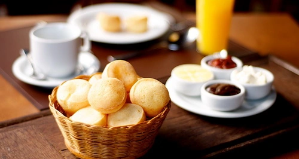
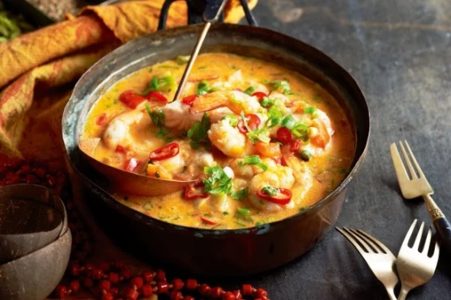

Pão de queijo (เปา จิ เคโชว)
- นำนมจืดและน้ำมัน อุ่นให้เดือด
- นำไข่ตอก ตี พักไว ้/ เตรียมแป้งใส่เกลือลงในชามใบใหญ่ พอมีพื้นที่นวด
- นำนมที่อุ่น เทในแป้ง ทีละครึ่ง ค่อยๆ คน ค่อยๆเติม ขั้นตอนนี้แป้งจะสุกและร้อนนิดนึง ใช้ใช้ไม้พายค่อยๆ คน ลองใช้มือจับๆ ถ้าพอนวดได้ ก็จัดการเลยค่ะ ระหว่างนี้ ค่อยๆ เทไข่ครึ่งฟองก่อน ระวังแป้งเหลวไปนะคะ นวดต่อได้เลย
- พอทุกอย่าเริ่มเข้ากันดี นำชีสทั้งหมดที่เตรียมไว้ ลงไปนวดต่อ พอรู้สึกว่าทั่วแล้ว
- วอล์ม เตาอบ อุณหภูมิ 170-180 องศา ประมาณ 5 นาที
- ระหว่างรอก็ปั้นแป้งลูกกลมๆ ทาน้ำมันบนมือ กันแป้งติดด้วยค่ะ
- ปั้นแป้งเสร็จก็นำเข้าเตาอบ อบต่ออีก 20 นาทั ก็พร้อมเสริฟแล้วค่ะ

Moqueca (โมเคกา)
- เริ่มจากการหมักปลาด้วยกระเทียมซอย น้ำมะนาว และเกลือ หมักทิ้งไว้ประมาณ 15 นาที
- ระหว่างรอปลาหมักได้ที่ ให้เราซอยหอมแขก หั่นมะเขือเทศ หอมหัวใหญ่และพริกหยวกเป็นแว่นๆรอไว้
- ซอยต้นหอมและผักชีรอด้วยครับ
- ตำพริกไทยดำและพริกชี้ฟ้าแห้งให้ละเอียด
- นำปลาดอลลี่ที่เราหมักไว้ ลงไปทอดในน้ำมันมะกอก(ใครไม่มีใช้น้ำมันปาล์มได้ครับ เพราะสูตรเดิมเค้าก็ใช้น้ำมันปาล์ม
- รอเนื้อปลาเปลี่ยนเป็นสีน้ำตาล ให้เรานำหอมแขกซอยลงไปผัดด้วย
- เติมส่วนประกอบที่สี่ ผัดจนหอมแขกเปลี่ยนเป็นสีใส
- เติมนมสดปรุงรสด้วยเกลือ จากนั้นใส่หอมใหญ่ที่เราหั่นแว่นไว้
- วางมะเขือ พริกหยวกไว้บนหน้า
- ปิดฝา รอเดือด
- สุดท้ายโรยต้นหอมผักชี โรยน้ำมันมะกอกอีกเล็กน้อย จัดจานพร้มเสิร์ฟ